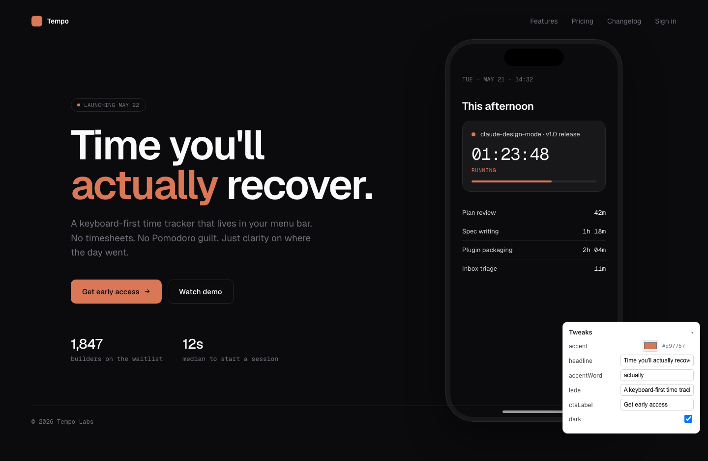
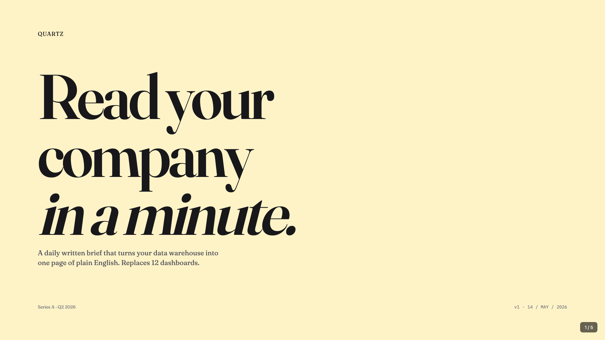
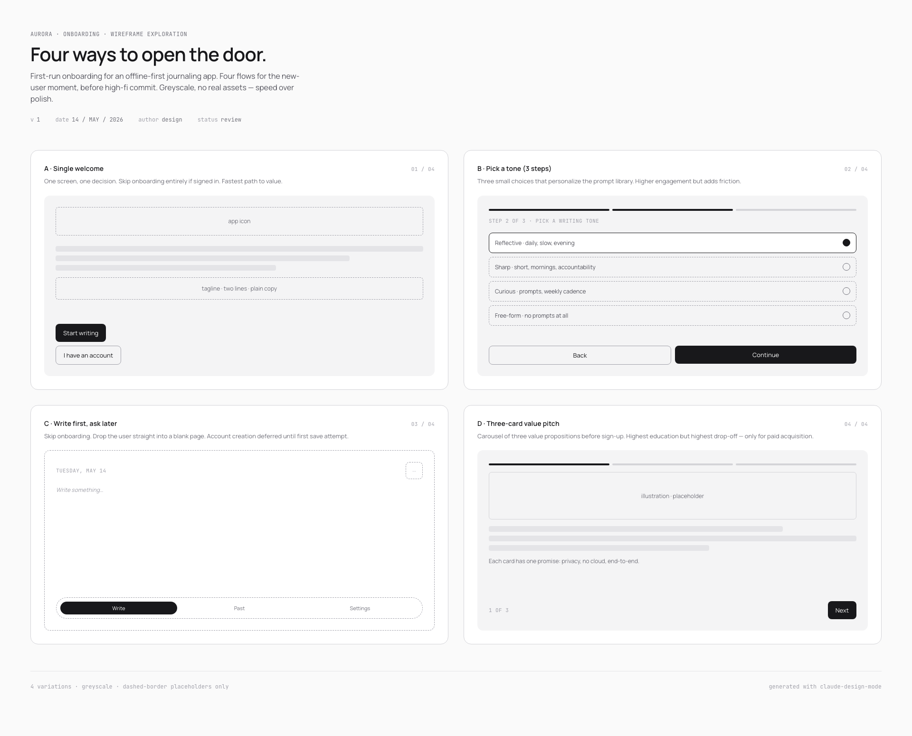
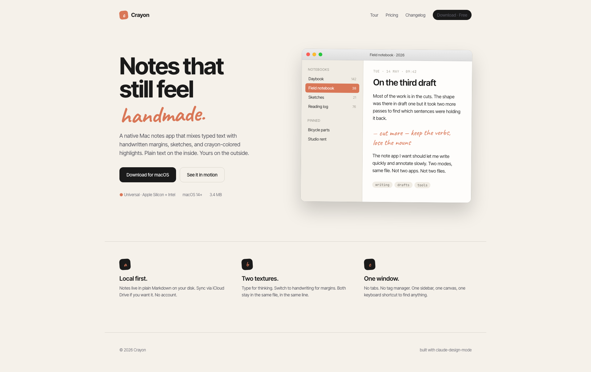
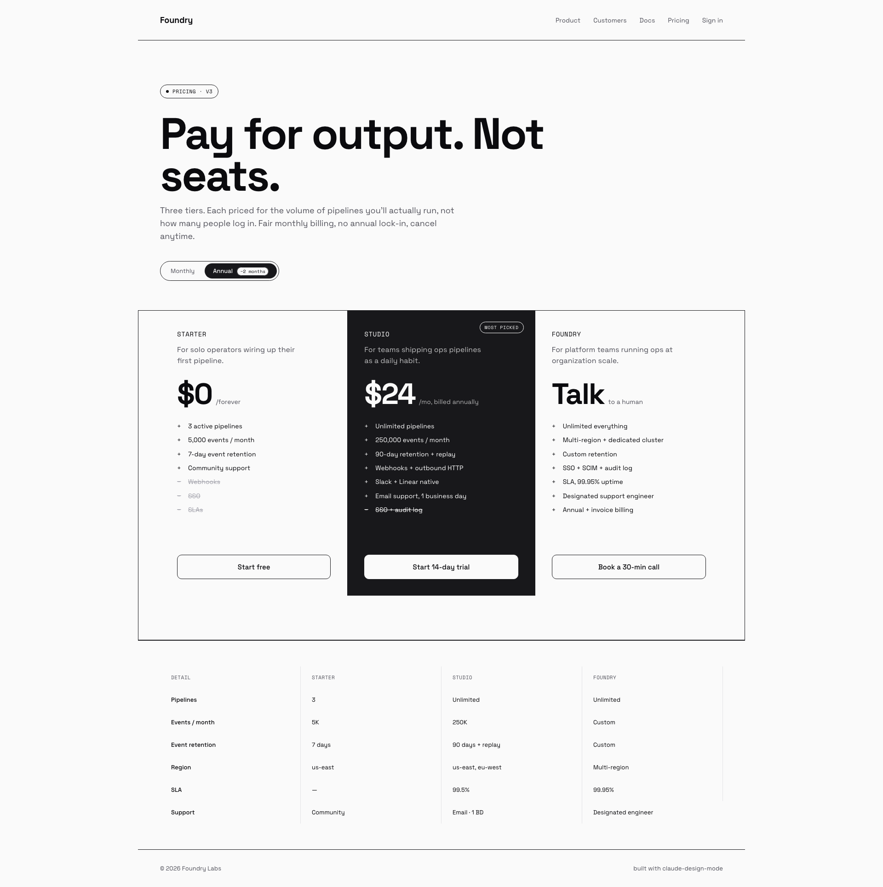

Every page below is a single self-contained HTML file generated through the design-mode workflow: starter copy → preview → AI-slop verifier → ship. Click a card to open the live page in a new tab.
Source files and the original prompts live in /examples in the repo.
Time-tracker app launch landing. Dark theme, Geist, iPhone mockup with a live timer counting down to the plugin's own v1.0 release. Six tweakable values via in-page panel.

Five-slide Series A pitch — Title, Problem, Solution, Traction, Ask. Fraunces serif italic, two background colors max. deck_stage.js handles scaling, keyboard nav, speaker notes, print-to-PDF.

Onboarding flow exploration for an offline-first journaling app. Four variations side-by-side — greyscale-only, dashed-border placeholders. Speed over polish, before any high-fi commit.

Native Mac notes app marketing site. Warm beige palette with one accent color, Inter Tight for body, Caveat handwritten for emotional accents. Pixel-precise macOS window with traffic lights + sidebar + content.

Three-tier SaaS pricing. Bold Space Grotesk + Space Mono pairing. Monochrome with one featured tier in inverted black. Feature comparison table below. No gradients, no checkmark icons — typography only.

Install the plugin and run /design-mode with any brief. Each design above started with one or two sentences in plain language. Yours can too.
Each example is a single HTML file with no build step, no bundler, no framework runtime. Just CSS, vanilla JS where needed, and Google Fonts.
One natural-language prompt per design → claude-design-mode workflow → headless preview → vision-only AI-slop audit → ship. No hand-tuning of the screenshots.
Open Tempo and tweak values in the bottom-right panel. Live updates apply immediately. With tweak-host.js running, edits also persist to disk.